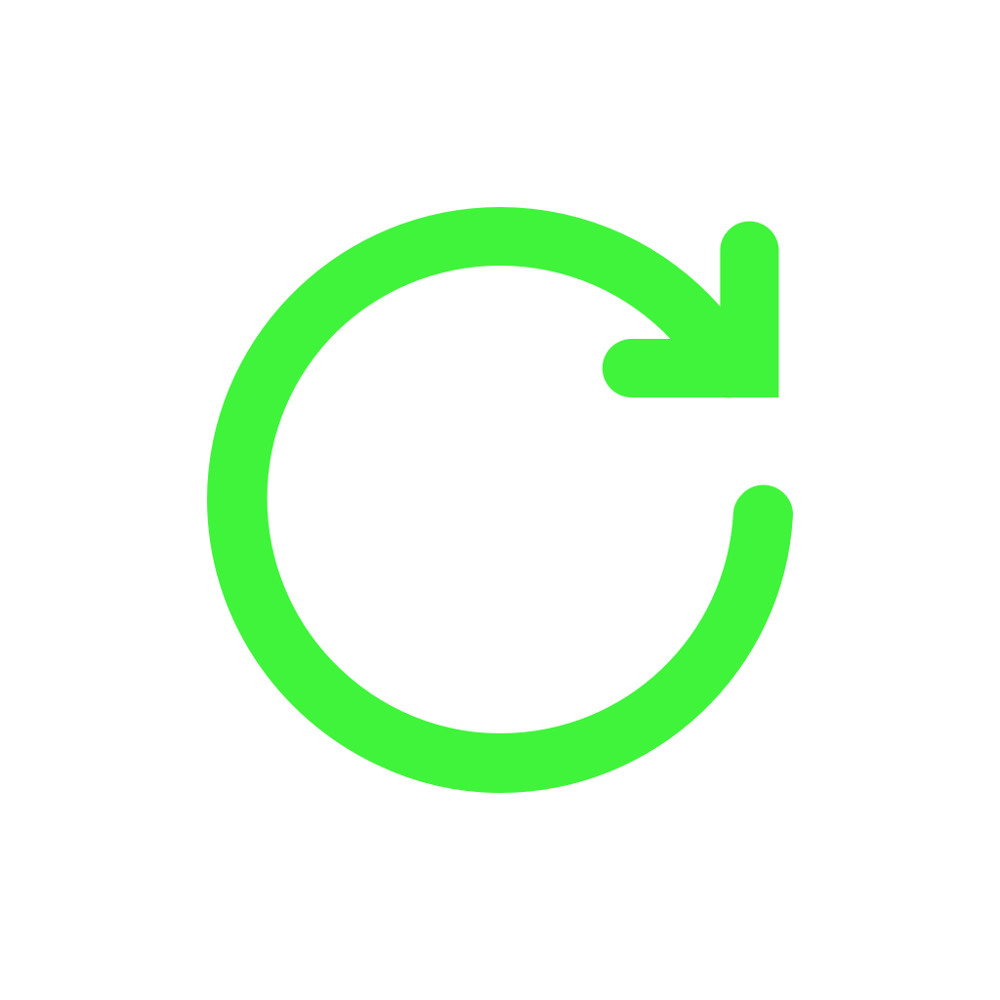

Open-source решение для переработки вторсырья
Open Recycle
Open-source решение для переработки вторсырья
Open Recycle - это экологический open-source it-проект, сообщество программистов и активистов, решающих проблему неудобства переработки вторсырья с помощью нейронных сетей и публикации открытых данных экологической тематики. Наша конечная цель - автоматическая система распознавания мусора, повышающая комфортность раздельного сбора в быту и устраняющая необходимость ручной сортировки в промышленности.
Проект стартовал 5 марта 2017 года в Санкт-Петербурге в рамках Open & Big Data Hackathon. В данный момент мы разрабатывам бета-версию приложения, способного по фотографии определить тип мусора, сообщить о возможности его переработки и месте приема. Релиз назначен на 5 июня - Всемирный день окружающей среды.
Наши партнеры - движение "Раздельный Сбор" и Теплица социальных технологий".